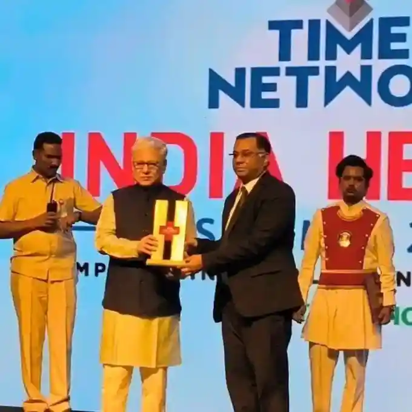

The Germanten Hospitals in Hyderabad is one of the few hospitals in
India to be equipped with the Robotic arm for knee implants. This premier multispeciality
hospital has the latest equipment to carry out a flawless robotic knee replacement
operation. Avail the best care and absolutely painless knee replacement surgery under Dr.
Mir Jawad Zar Khan.
The robotic arm can cut to the nearest half millimeter. The
installation of knee prostheses is safer and less painful with the use of this latest
technology.
Our hospital is the first to have equipped the Robotic arm for total or
partial knee prosthesis placement, says Dr. Mir Jawad Zar Khan a veteran of two decades and
a pioneer of innovative approaches in the field of orthopedics and surgery.
The advantages of the robot are numerous. It is more accurate and
allows the surgeon to initially scan and model in 3D the knee of the patient, explains Dr.
Mir Jawad Zar Khan. It is thus possible to determine the size of the implant, to adapt to
the morphology of the patient. Then, sensors are installed allowing the surgeon to have
information in real time, during the operation, on the knee, and in particular to see the
retraction of tissues. By modifying the position of the implant by a few degrees, it is
possible to arrive at a perfect harmony of the implant with the body, which is decisive for
the life of the prosthesis.
Dr. Mir Jawad Zar Khan is a living symbol of hard work and excellence
who has persevered and become one of the most well-known surgeons in the country. His superb
work in the field of robotic knee replacement has made Germanten Hospital the most reputed
center for orthopedic surgery. A gold medalist of Osmania University he has advanced
training in the field from USA and Germany. It is possible for you to be relieved entirely
of your knee pain now if you opt for a robotic knee replacement at Germanten Hospital.
Patient Testimonials
Watch our patients share their successful knee replacement journeys
Video Testimonials
Bilateral Knee Replacement Surgery by Dr. Mir Jawad Zar
Khan after Surgery Patient testimonials.
Female Patient 75 years suffering from severe
osteoarthritis both knees underwent both knee replacement at same time.
Mr. Anil Ahuja aged 65 years Patient from New Delhi
underwent both knee replacement surgery by Dr.Mir Jawad Zar Khan. Able to walk
normally within 5 days of surgery.
"I was completely floored," says Gulshan Kumar. "The
first night after my surgery I was standing, the next day I was using a walker
without pain, and I was home the day after that."
Mr. Vishwanath Rao and his family members saying thanks
to Dr. Mir Jawad Zar Khan and Germanten Hospital.
One month after he walks without pain and support. Mr.
Abdul Ali says "I am very grateful to Dr. Mir Jawad Zar Khan sir."
Patient age 68yrs was suffering from gross deformity of
both knees from 20 years. Dr. Mir Jawad Zar Khan operated and corrected both knees
perfectly by knee replacement surgery.
Patient Name Mrs. Shakuntala, Total Knee Replacement
Surgery By Dr. Mir Jawad Zar Khan after Surgery Patient Testimonials.
Bilateral Knee Replacement Surgery by Dr. Mir Jawad Zar Khan after
Surgery Patient testimonials.
Female Patient 75 years suffering from severe osteoarthritis both knees
underwent both knee replacement at same time.
Mr. Anil Ahuja aged 65 years Patient from New Delhi underwent both knee
replacement surgery by Dr.Mir Jawad Zar Khan. Able to walk normally within 5 days of
surgery.
"I was completely floored," says Gulshan Kumar. "The first night after
my surgery I was standing, the next day I was using a walker without pain, and I was home
the day after that."
Mr. Vishwanath Rao and his family members saying thanks to Dr. Mir
Jawad Zar Khan and Germanten Hospital.
One month after he walks without pain and support. Mr. Abdul Ali says
"I am very grateful to Dr. Mir Jawad Zar Khan sir."
Patient age 68yrs was suffering from gross deformity of both knees from
20 years. Dr. Mir Jawad Zar Khan operated and corrected both knees perfectly by knee
replacement surgery.
Patient Name Mrs. Shakuntala, Total Knee Replacement Surgery By Dr. Mir
Jawad Zar Khan after Surgery Patient Testimonials.
View More Testimonials
Best Knee Replacement Surgeon in Hyderabad
We are prominent knee replacement hospital located at Hyderabad with
research collaboration with Germany having multiple success stories in knee replacement
surgery. A visionary & founder of our hospital, with intention of providing quality health
services. Dr. Mir Jawad Zar Khan's name goes hand in hand with Knee replacement Surgery.
Dr. Mir Jawad Zar Khan - Pioneer in Knee
Replacement
Dr. Mir Jawad Zar Khan introduced Robotic and Computer Navigation
Surgery for knee joint replacement in India for the first time. Germanten Hospitals has most
modern and sophisticated class100 Laminar operation theatres for strict prevention of
infection. Today, our Hospital is the best in class Knee Replacement Centre, the best Knee
Replacement Hospital.
Training & Experience
Trained at Germany
5000+ Knee Replacement Surgeries
25 years of experience
Pioneer in Robotic Surgery
Achievements
First to introduce Robotic Knee Replacement in India
Computer Navigation Surgery pioneer
Multiple success stories
International collaboration with Germany
WHAT IS KNEE REPLACEMENT? (KNEE ARTHROPLASTY)
Ideally, Knee replacement is a surgical procedure, which is performed
to reduce the pain and disability which restricts the mobility as a result of degenerative
arthritis. The dominant reasons for the unbearable pain in the knee include meniscus tears,
osteoarthritis, rheumatoid arthritis, post trauma, ligament tears, and cartilage defects.
The 'ZERO' Technique Revolution
At our hospital, The Revolutionizing Total Knee Replacement Surgery
with '0'(ZERO) Technique Sounds incredible. Our Hospital have conducted several Painless
Knee Replacement Surgery for 25 years now. Patients at our hospital do not undergo the
traumatic pain post surgery, thanks to the advancement of the sophisticated medical
technology, the highly rated skills of its surgical team and of course the pain management.
IMPORTANT FEATURES OF Zero Risk Methods IN KNEE
REPLACEMENT
25 Minutes Surgery - Knee surgery performed within 25 mins with minimal trauma
Walk in 4 Hours - Post surgery patient can walk with support as early as in 4hrs with no
pain
Zero Infection Risk - Class100 OTs with disposable surgical suite and positive air
pressure
Painless Procedure - Totally painless with minimal medicines and no emotional stress
Bone Preserving - Bone preserving technique with high quality implants
Expert Team - Experienced physiotherapists and senior anesthetists team
Specialized safe anesthesia for geriatric patients
KNEE REVISION SURGERY
Knee revision surgery, also called revision Total Knee Arthroplasty, is
a surgical procedure where the previously implanted artificial knee joint, or prosthesis is
replaced with a new prosthesis. Knee revision surgery also associates usage of bone grafts.
The bone graft might be an autograft, meaning that the bone is taken from another area of
the patient's body; or an allograft, in the sense that the bone tissue is taken from some
other donor.
REASONS FOR KNEE REVISION SURGERY
A knee joint might fail due to the below reasons:
Aseptic Loosening
Wearing of plastic
Improper alignment
Unstable Joint
World-Class Hospital Facilities
Class100 Laminar OTs, Positive Air Pressure, Disposable Surgical Suite.
VARIOUS CATEGORIES OF KNEE REPLACEMENT SURGERIES
There are basically two kinds of Knee replacement surgeries namely the
TKR (Total Knee Replacement) and UKR (Unicondylar / Partial Knee Replacement). Knee
Replacement is a surgery that's done as a part of the knee or done only over a partial area
or a total knee replacement. Typically, the surgery removes the damaged joint and the
surface is replaced with either metal or plastic surface which allows ease of movement in
the knee joint area. It's also called as Implant or Prosthesis.
WHAT TO EXPECT POST TKR SURGERY?
At our Hospitals, under the expertise guidance of Dr. Mir Jawad Zar
Khan the results of a Total Knee Replacement are outstanding. The operation relieves pain in
patients & patients can walk without any support.
At our hospital we take utmost care that our patients are treated in
the most sterile conditions. Our Class100 OTs matches to the most strict infection control
standards, we have mastered the usage of Surgical Spacesuit worn by our surgeons while
performing the surgery to eliminate any chances of infections. Positive Air pressure in the
OTs ensures that the air outside the complex makes the OT completely sterile.
PARTIAL KNEE REPLACEMENT (PKR)
A partial knee replacement is an alternative to total knee replacement
for some patients with osteoarthritis of the knee. This surgery can be done when the damage
is confined to a particular compartment of the knee.
In a partial knee replacement, only the damaged part of the knee
cartilage is replaced with prosthesis.
Patients with medial, or lateral, knee osteoarthritis can be considered
for partial knee replacement. "Medial" refers to the inside compartment of the joint, which
is the compartment nearest the opposite knee, while "lateral" refers to the outside
compartment farthest from the opposite knee. Medial knee joint degeneration is the most
common deformity of arthritis.
What are the advantages of partial knee replacement over total knee
replacement? Compared to total knee replacement, partial knee replacement better preserves
range of motion and knee function because it preserves healthy tissue and bone in the knee.
Who is the best-Rated knee replacement surgeon in
Hyderabad? Dr. Mir Jawad Zar Khan is considered the best knee replacement
surgeon in India.
What types of knee replacement surgeries does Dr. Mir Jawad Zar
Khan perform? Dr. Mir Jawad Zar Khan performs various types of knee
replacement surgeries, including traditional and robotic knee replacement surgeries.
What is robotic knee replacement surgery? Robotic
knee replacement surgery is a minimally invasive procedure that uses robotic technology to
assist the surgeon in precise placement of the knee implant, leading to improved outcomes
and faster recovery times.
Where does Dr. Mir Jawad Zar Khan perform knee replacement
surgeries? Dr. Mir Jawad Zar Khan performs knee replacement surgeries at
Germanten Hospital in Hyderabad.
How many knee replacement surgeries has Dr. Mir Jawad Zar Khan
performed? Dr. Mir Jawad Zar Khan has performed over 10,000 knee replacement
surgeries.
What is the recovery time for knee replacement
surgery? Most people can expect to return to their normal activities within
6-12 weeks after surgery.
Is knee replacement surgery covered by
insurance? Most health insurance plans cover knee replacement surgery.
Latest News

Germanten
Hospital has earned a prestigious position in the Times Health Survey 2023!